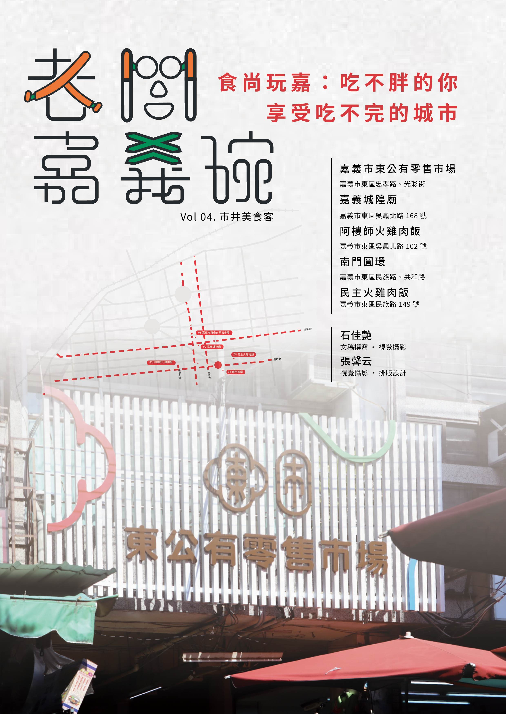

火雞肉飯大對決：阿樓師 vs 民主，誰是你的嘉義味覺英雄？
01 Oct， 2024

市井美食客
特此聲明:此文章中，無任何火雞肉飯店受到傷害，純屬作者個人觀點，各位客官請親自體驗~……
Continue Reading 新華美西裝社：我想做的事，努力去做，就會達成
03 Sep， 2024

美感觀察家
「如果以三個詞形容你們店或是想成獻給顧客的感覺，會是哪三個詞?」 品牌經理人jimmy道:「我想會是……
Continue Reading很感謝當初很傻、很大膽的自己才有現在大家看到的Supiido
04 Oct, 2024

時光復刻員
「嘉義市是一座很方便的城市,我們喜歡騎摩托車載著小朋友一家四口這樣亂逛。」……
Continue Reading